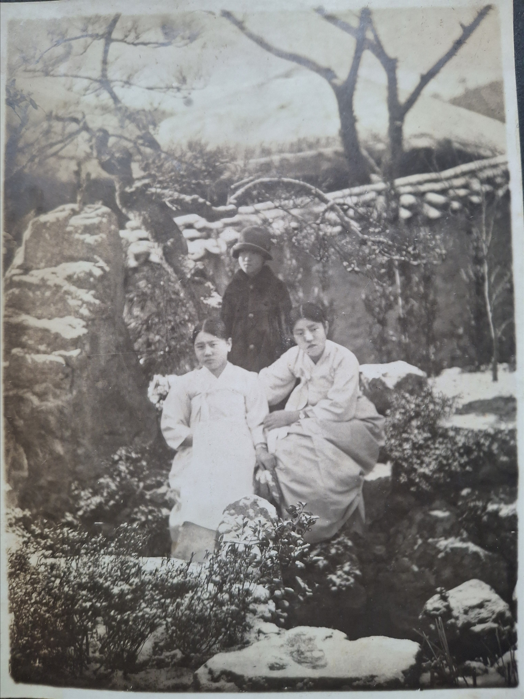
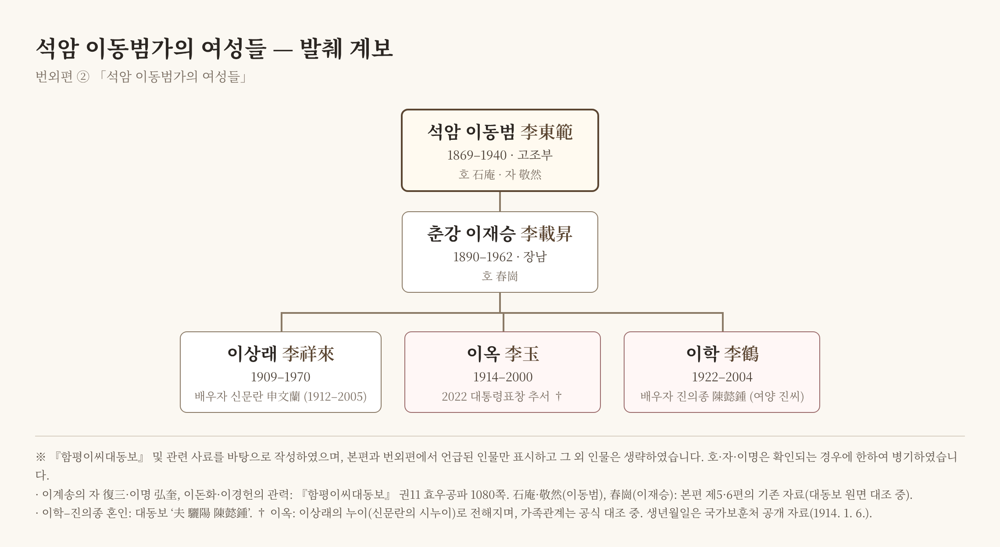
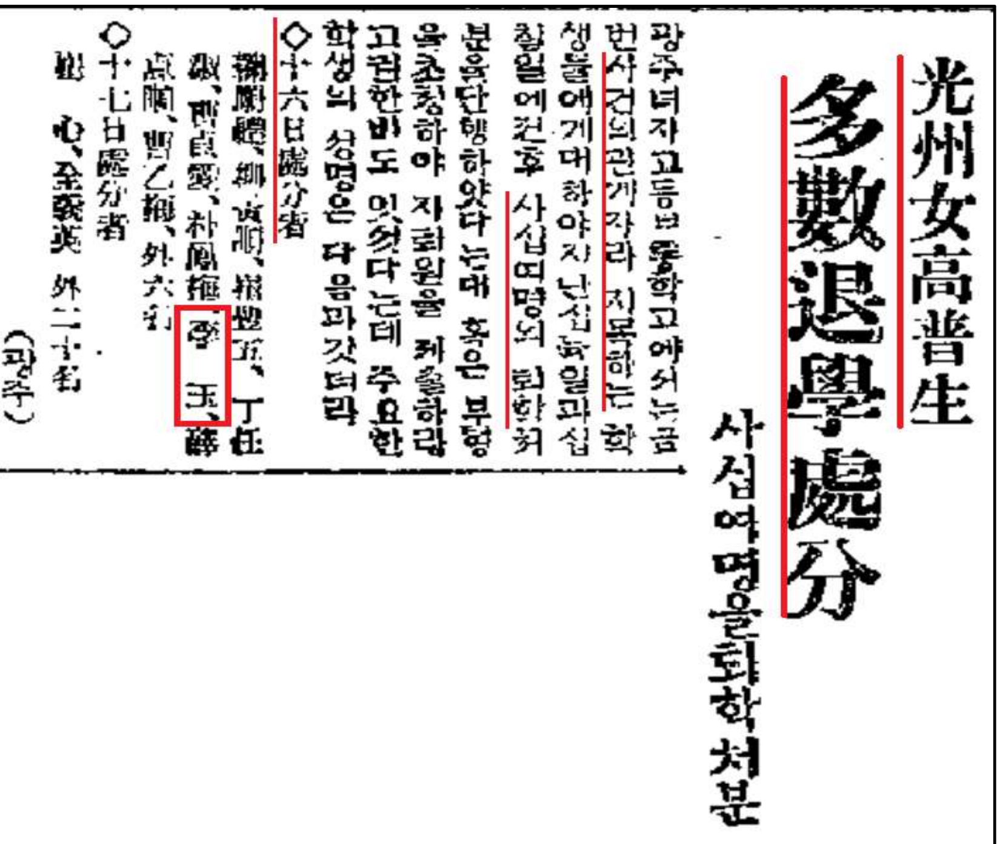
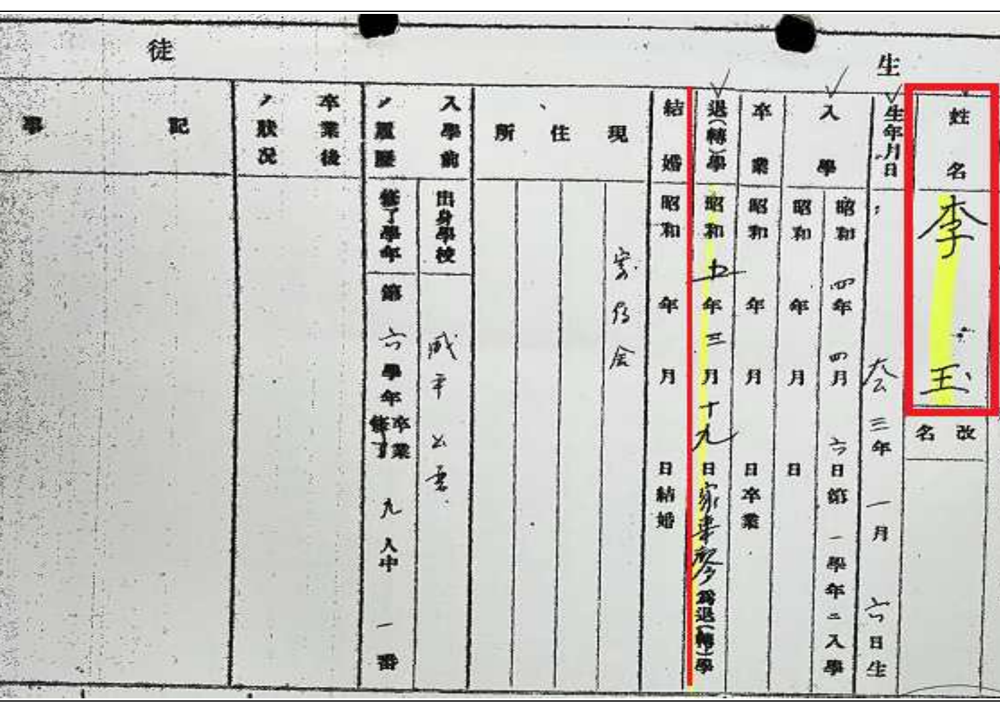
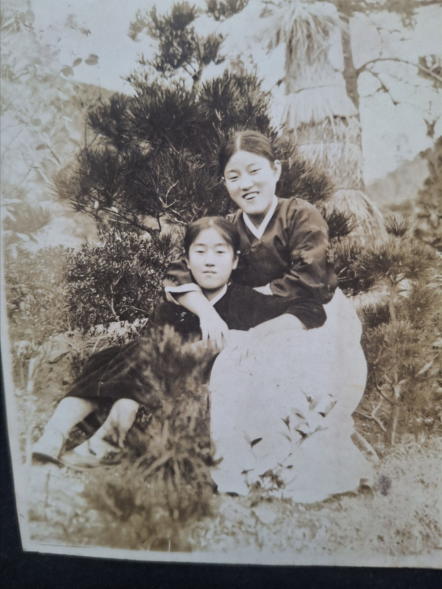

The Women of the Lee Dong-beom Family
The Lee Dong-beom Family of Hampyeong: A 128-Year Bond | Special Edition 2
[EN] English edition · Translated from the Korean original · 한국어 원문
Our family has kept a photograph of three women taken together. In the front row sit my grandmother, Shin Mun-ran (申文蘭), and Lee Ok (李玉); in the back row stands Lee Hak (李鶴). To my grandmother, the two were her husband Lee Sang-rae's sisters — her sisters-in-law.
I told my grandmother's story in Part 8. In this special edition, focusing on the other two women in the same photograph, Lee Ok and Lee Hak, I would like to follow the paths taken by the women of the Lee Dong-beom family.


1. The Same School, the Same Era
In the late 1920s, two women of this family were attending Gwangju Public Girls' Higher Common School (광주공립여자고등보통학교; a descriptive translation of the name of a girls' secondary school of the colonial period), known for short as Gwangju Yeogobo: my grandmother, who married into the head family around 1928, and Lee Ok (1914–2000), who, according to family accounts, was Lee Sang-rae's younger sister and my grandmother's sister-in-law. According to family tradition, Lee Ok entered the school in 1929, one year below my grandmother.
The clash that began at Naju Station in the autumn of 1929 spread in November into the Gwangju Student Independence Movement, and students of Gwangju Yeogobo also took part. According to family tradition, the female student involved in the Naju Station incident was in the same year as my grandmother and was her friend. Who that student was, and the relationship between the two, have not yet been confirmed in records.
The family story that my grandmother gave up her studies at the principal's demand was told in detail in Part 8. My grandmother's attendance and the circumstances of her withdrawal remain family tradition and have not been confirmed in school records.
2. Lee Ok — An Expulsion Left in the Records
According to family tradition, Lee Ok refused to comply with the school's demands, held out, and was expelled. The fact of her expulsion is confirmed in records. The specific circumstance that she held out against the school's demands, however, is a story told by the family and has not been confirmed in records.

The Chosun Ilbo of January 20, 1930, reported the expulsion of some forty students of Gwangju Yeogobo, and the name "Lee Ok" appears in the list it printed of those expelled on January 16.

Meanwhile, the school register made public by the Ministry of Patriots and Veterans Affairs records that she entered on April 6, 1929, and left on March 19, 1930, for "family circumstances." The January expulsion reported in the newspaper and the March withdrawal in the school register bear different dates. Because we have not yet been able to confirm why the two records differ, this piece records both dates as they are.
The Ministry of Patriots and Veterans Affairs judged that, although the reason for leaving is recorded in the register as "family circumstances," she was in fact expelled for taking part in the Gwangju Student Movement.

3. The 2022 Presidential Commendation
Recognizing Lee Ok's participation in the Gwangju Student Independence Movement, the Ministry of Patriots and Veterans Affairs posthumously awarded her a Presidential Commendation on the 83rd Patriotic Martyrs' Day in 2022 — ninety-two years after the 1930 record of her expulsion.
This commendation is for Lee Ok's own contributions. In my grandmother's case, who attended the same school, neither her participation in the movement nor the circumstances of her withdrawal have yet been confirmed in official records. I write the two stories side by side, but intend to keep the weight of the records distinct.
4. Lee Hak — The Sister-in-Law Who Left a Memoir
Lee Hak (1922–2004) was Lee Sang-rae's younger sister. She is the author of the memoir The Woman Who Wanted to Be Hwang Jini (황진이가 되고 싶었던 여인, 2001), which vividly conveys my grandfather's youth; I introduced a passage from that book in Part 7.
According to the author's biography in the book, Lee Hak graduated from Baehwa Girls' High School in Seoul in 1939 and later worked as a calligrapher and embroidery artist. In March 2002 the Dong-A Ilbo also reported on her embroidery and calligraphy and the publication of her memoir.

Lee Hak was also the wife of Chin Iee-chong (陳懿鍾), who served as the 17th Prime Minister of the Republic of Korea. In the Hampyeong Lee Clan Comprehensive Genealogy, too, the entry for Lee Hak records her husband as Chin Iee-chong of the Yeoyang (驪陽) Chin clan.
Lee Hak left her mark not only through writing and art but also on the land of Gochang. Hagwon Farm in Gochang, North Jeolla Province, is a place where Lee Hak bought barren hillside land and began to reclaim it; in 1992 her son, Jin Yeong-ho, left his position as a director at a large company, returned home, and carried on the farm. Since then it has become a site of landscape agriculture, where green barley in spring, sunflowers in summer, and buckwheat in autumn spread across the fields, and a place of local festivals.
5. Three Women, Different Records
The three women in the photograph lived in the same family in the same era, but the records they left take different forms.
Lee Ok's expulsion remains in a newspaper, a school register, and the state's record of commendation. Lee Hak's life remains in the memoir she wrote herself, in newspaper reports, and in the genealogy. My grandmother's school days survive mostly only in family memory and photographs.
Without mixing stories with many records and stories with few at the same weight, I will write down each as far as it can be confirmed.
Putting this together has also made clear the remaining questions: why the two dates of Lee Ok's leaving school differ, my grandmother's original school register and the name of her classmate in the Naju Station incident, and an official check of Lee Ok's relationship to the family.
Official interview, Kim Koo Museum & Library [Korean]
See also
- Full archive (English): https://lsaru23-ai.github.io/hp-db-archive/en/
- Full archive (Korean): https://lsaru23-ai.github.io/hp-db-archive/
- X @hp_db_archive https://x.com/hp_db_archive
- Threads @hp_db_archive https://www.threads.com/@hp_db_archive
Related
- Part 7: Lee Sang-rae — The Grandson Whose Name Appears on Gwangmyeong https://lsaru23-ai.github.io/hp-db-archive/en/post7.html
- Part 8: Shin Mun-ran — The Daughter-in-Law Who Left School Around 1930 https://lsaru23-ai.github.io/hp-db-archive/en/post8.html
- Series Notice: Pausing for Breath — After Ten Parts https://lsaru23-ai.github.io/hp-db-archive/en/notice.html
- Special Edition 1: The Ancestors of Seok-am Lee Dong-beom https://lsaru23-ai.github.io/hp-db-archive/en/ex1.html
Main references
[1] Chosun Ilbo, January 20, 1930, "Many Gwangju Yeogobo Students Expelled — Some Forty Students Expelled" (광주여고보생 다수 퇴학처분). [Korean]
[2] Ministry of Patriots and Veterans Affairs, press release on recognition of independence patriots for the 83rd Patriotic Martyrs' Day, November 15, 2022, pp. 19–21 (Lee Ok). [Korean]
[3] Yun Seon-ja, "The Participation of Gwangju Public Girls' Higher Common School Students in the Gwangju Student Independence Movement" (광주여자고등보통학교 학생들의 광주학생독립운동 참여), proceedings of the Honam Historical Society conference, 2022. [Korean]
[4] Lee Hak (李鶴), The Woman Who Wanted to Be Hwang Jini (황진이가 되고 싶었던 여인), Beomusa, 2001, author's biography. [Korean]
[5] Dong-A Ilbo, March 4, 2002 (report on Lee Hak's embroidery and calligraphy and the publication of her memoir). [Korean]
[6] Hampyeong Lee Clan Comprehensive Genealogy, vol. 11 (Hyou-gong branch), p. 1080 (Lee Hak, "夫 驪陽 陳懿鍾").
[7] Family-held photographs (the photograph of Shin Mun-ran, Lee Ok, and Lee Hak; a portrait of Lee Ok; a photograph of the sisters Lee Hak and Lee Ok).
[8] Seoul Shinmun, April 26, 2011, "'I lost my entire fortune, but when I discovered landscape agriculture, hope…'" (interview with Jin Yeong-ho, head of Hagwon Farm, Gochang). [Korean]
This piece distinguishes facts confirmed directly in documents from family tradition. Lee Ok's commendation is for her own contributions; my grandmother's attendance and the circumstances of her withdrawal are family tradition.
This English edition is a translation of the Korean historical archive. The Korean original remains the authoritative version. Documentary evidence, family recollections, and unresolved questions are distinguished throughout.
Chinese characters given in parentheses after names and source titles are supplied for identification; they are not quotations from the original documents unless shown in quotation marks.